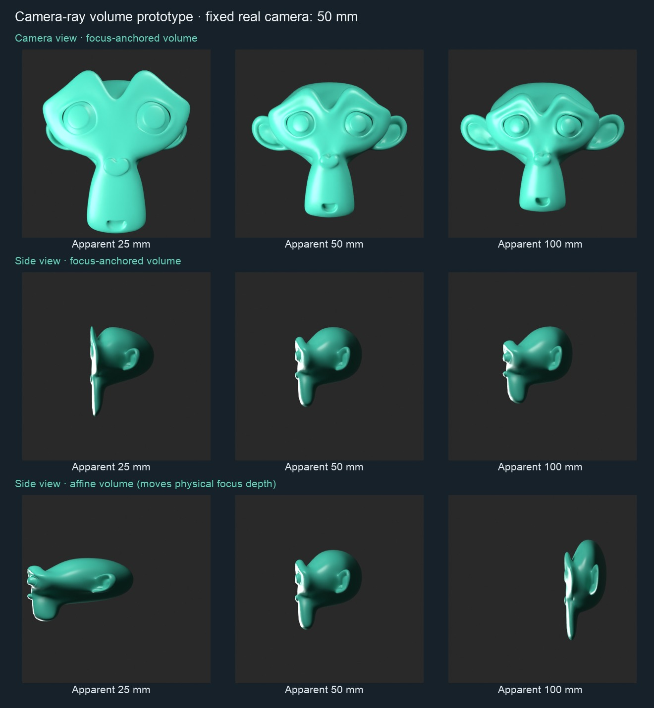

Standalone research. Production CamKeys and the live scene are unchanged. Checkpoint: CamKeys 28d829a, Beyond UI 29485e3.
Open/download the editable Blender prototype · 5.2.2 measurements · 5.1.2 measurements
Select the monkey, adjust Apparent Lens in the modifier (25 / 50 / 100 mm), and compare camera versus side views. Mode 0 anchors the physical focus plane; mode 1 preserves volume with an affine transform but moves focus depth. Modes 2 and 3 are depth-only and simplified legacy comparisons. Invalid settings preserve the original mesh and set camkeys_ray_valid false.
Measured: anchored volume error below 0.0042% on the 10,242-vertex closed mesh at the tested lens ratios. At 164k vertices: 0.57 ms median / 0.79 ms p95 versus 0.48 / 0.81 ms for an unwrapped simplified legacy baseline on 5.2.2. CPU synthetic evaluation, not full Uraraka or Windows/GPU acceptance.
Limits: weighted masks are not exactly volume conserving (3.145% error in the test). Curvature/shading can change. Extreme settings, companion meshes, live camera adapters and all supported runtimes still need production qualification. The file is saved with 5.1.2 and verified reopened in 5.2.2.

The original 50 mm camera remains fixed. Side-view framing is identical across columns. These are rendered geometry comparisons, not generated concept artwork.